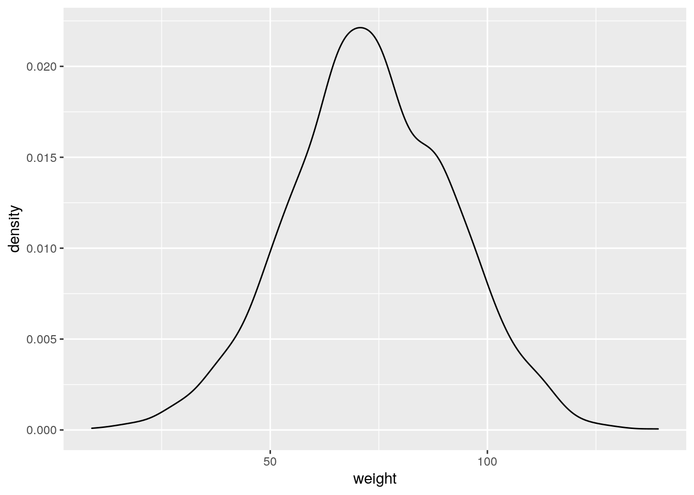

probability_distributions
Aaron Weimann
15/04/2020
Probability distributions lecture code snippets
Plotting distributions in R
bf <- read_csv("datasets/BrownFat_2011.csv")
ggplot(bf, aes(Weight)) +
geom_density()bf %>% ggplot(aes(Weight)) +
geom_density()
ggsave("images/probability_distributions/brown_fat_density.png")
bf %>% ggplot(aes(Weight)) +
geom_histogram()ggsave("images/probability_distributions/brown_fat_histogram.png")Data transformations and the log normal distribution
#plot a histogram of the raw data
bf %>% ggplot(aes(Total_vol)) +
geom_histogram()ggsave("images/probability_distributions/total_vol_histogram.png")
#use a a log transformation of the x axis
bf %>% ggplot(aes(Total_vol)) + #we could also use ggplot(aes(log(Total_vol)))
geom_histogram() +
scale_x_log10() #if we already log transformed we don't need thisggsave("images/probability_distributions/total_vol_log_normal.png")
#plot the probability density distribution for different paramters of my and sigma
lnorm_sample_1 <- data.frame(density = dlnorm(seq(0, 2.5, 0.01), 0, 1), type = "sd = 1, my = 0")
lnorm_sample_2 <- data.frame(density = dlnorm(seq(0, 2.5, 0.01), 0, 0.5), type = "sd = 0.5, my = 0")
lnorm_sample_3 <- data.frame(density = dlnorm(seq(0, 2.5, 0.01), 0, 0.25), type = "sd = 0.25, my = 0")
lnorm_sample_4 <- data.frame(density = dlnorm(seq(0, 2.5, 0.01), 0, 4), type = "sd = 4, my = 0")
lnorm_sample <- rbind(lnorm_sample_1, lnorm_sample_2, lnorm_sample_3, lnorm_sample_4)
lnorm_sample$x <- seq(0, 2.5, 0.01)
lnorm_sample %>% ggplot(aes(x, density, colour = type)) + geom_line()ggsave("images/probability_distributions/log_normal_w_different_params.png")The binomial distribution
x <- 1:10
trials <- 10
density <- dbinom(x, trials, prob = 0.5)
binom_d <- data.frame(successes = as.factor(x), probability = density)
binom_d %>% ggplot(aes(successes, probability)) + geom_point()ggsave("images/probability_distributions/dbinom.png")Sample from a a normal distribution
?rnorm
#number of samples
n <- 2000
mean_bf <- mean(bf$Weight)
sd_bf <- sd(bf$Weight)
weights <- rnorm(n, mean_bf, sd_bf)
weight_sample <-data.frame(weight = weights)
weight_sample %>% ggplot(aes(weight)) +
geom_density()
Sample from a binomial distribution
sample_binom <- data.frame(successes = rbinom(10000, 10, 0.5))
sample_binom %>% ggplot(aes(successes)) +
geom_histogram(bins = 11)
Monte Carlo simulation
#get a sample of size 10000 with probabilty 0.5 and ten trials
sample_binom <- rbinom(10000, 10, 0.5)
#how often do we see just one or no man
extreme_samples <- sample_binom[sample_binom <= 1]
#what is the frequency in our sample
pval <- length(extreme_samples)/ 10000
print("The p-value is")## [1] "The p-value is"print(pval)## [1] 0.0105